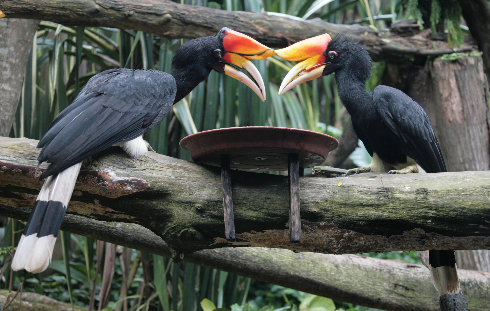

Rhinoceros Hornbill: Malaysia's Majestic Bird
The rhinoceros hornbill (Buceros rhinoceros) is one of the most iconic and revered birds in Malaysia. Known for its distinctive curved casque atop its large beak, the rhinoceros hornbill is an awe-inspiring sight and is considered a symbol of strength and power in Malaysian culture, particularly among the indigenous Dayak people of Borneo. With its striking appearance and cultural significance, this bird has become an emblem of Malaysia’s rich biodiversity and natural heritage.
